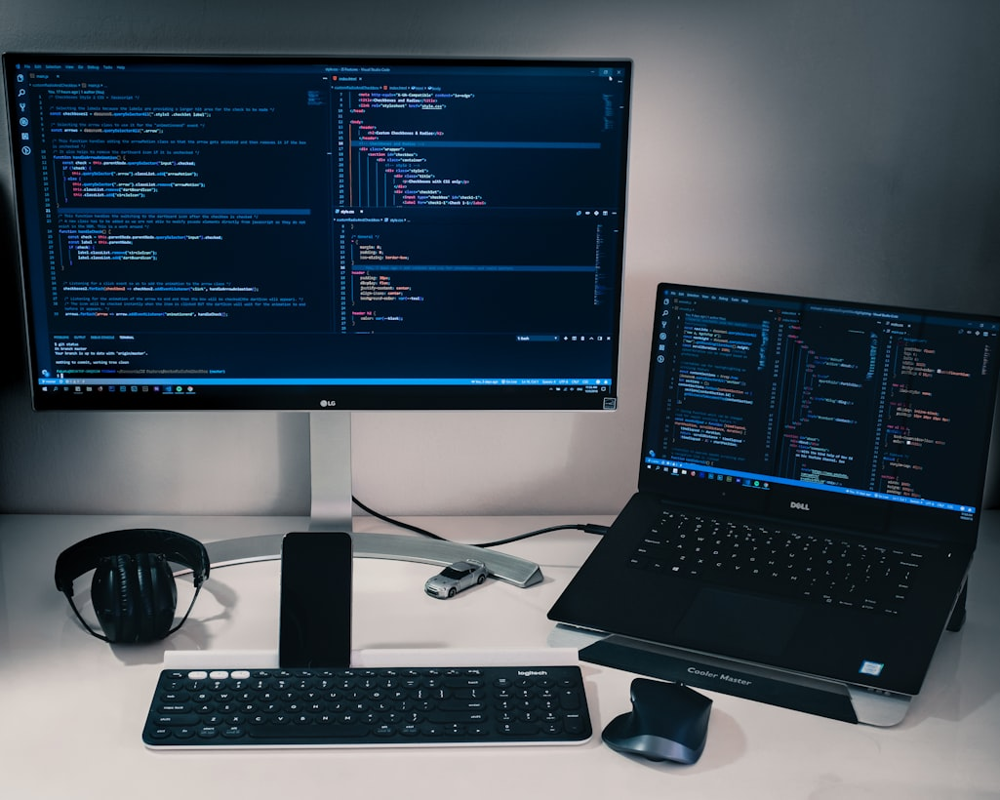

O que são Linguagens de Programação?
As linguagens de programação são linguagens usadas para a comunicação com o computador. Estas linguagens são constituídas de comandos, que quando utilizados corretamente, executam uma ação. A programação nos computadores não tem uma data correta de início.
Quando começou
Tudo começou na década de 30, com os primeiros computadores elétricos. Em 1948, Konrad Zuse publicou sua criação, a linguagem de programação Plankalkül. Na época, ainda não tinha muita utilidade, então foi esquecida.
Computador década de 30
As primeiras Linguagens
Foi na década de 50 que as primeiras linguagens modernas surgiram. FORTRAN criada por John Backus(1955), LISP criada por John McCarthy (1960), a "List Processor” e COBOL criada por Grace Murray Hopper, a COmmon Business Oriented Language. Tambem apareceu na mesma epoca a ALGOL 60.
Hoje em dia
Hoje em dia as tecnologias avançaram muito, os computadores estão bem mais avançados e com muito mais tecnologias. E as linguagens de programação também evoluiram bastante, cada linguagem tem sua função, por exemplo, para sites são utilizadas as linguagens JavaScript, PHP, Python. Já para apps são utilizadas as linguagens Java, C#, Python, Kotlin.
Computador hoje em dia
A aprendizagem hoje em dia também está muito avançada, está bem mais facil de aprender a programar. Hoje em dia existem cursos online pelo Youtube como os do CURSO EM VÍDEO e sites como a W3SCHOOLS e vários outros.
Aprenda Mais
Linguagens mais utilizadas hoje em dia:
- JavaScript
- Python
- PHP
- Java
- C#
- C++
Criado por Brendan Eich em 1995.
Criado por Guido Van Rossum em 1991.
Criado por Rasmus Lerdof em 1994.
Criado por James Gosling em 1995.
Criado por Dennis Ritchie em 1972.
Criado por Bjarne Stroustrup em 1985